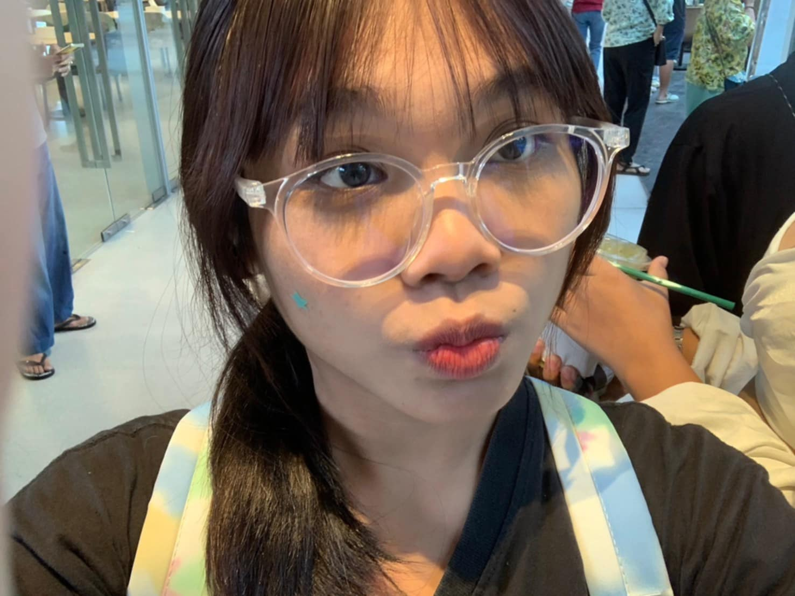

ผู้จัดทำ

ข้อมูลส่วนตัว
ชื่อ: นางสาว กัญญ์วรา นูพลกรัง
เกิดวันที่: 11 กุมภาพันธ์ 2551
ชื่อเล่น:แพรว
ที่อยู่:ซอย25/1 ทุ่งกลม/ตาลหมัน ตำบลหนองปรือ อำเภอบางละมุง จังหวัดชลบุรี 20150
อายุ: 16ปี
ปวช.2 : แผนกวิชาเทคโนโลยีสารสนเทศ วิทยาลัยเทคนิคสัตหีบ
ข้อมูลด้านการศึกษา
ระดับอนุบาล ศึกษาที่ : โรงเรียนบ้านพลกรัง
เรียนตั้งแต่ อนุบาล ถึง ป.1
ระดับประถม ศึกษาที่ : โรงเรียนบ้านทุ่งคา
เรียนตั้งแต่ ป.2 ถึง ป.5 และกลับไปศึกษาต่อที่ โรงเรียนบ้านพลกรัง ตั้งแต่ ป.6 ถึง ม.1
ระดับมัธยม ศึกษาที่ : โรงเรียนบ้านทุ่งคา
เรียนตั้งแต่ ม.2 ถึง ม.3
ปัจจุบัน ศึกษาที่ : วิทลัยเทคนิคสัตหีบ
กำลังศึกษาอยู่ระดับชั้น ปวช.2
งานอดิเรก/สิ่งที่สนใจ
เล่นกีฬา
ดูหนัง
ฟังเพลง
เล่นเกม
วาดรูป
แรงบันดาลใจที่เลือกเรียนคอมพิวเตอร์
อยากทำงานในบริษัทิชอบงานกราฟฟิกดีไซน์แต่ไม่ค่อยมีพื้นฐานคอมเท่าไหร่เลยอยากมาเรียนเพื่อเก็บประสบการณ์และความรู้พื้นฐานในสาขาวิชานี้
ผลงาน/เกียรติคุณ
ระดับอนุบาล3 แข่งเล่านิทานได้รางวัลชนะเลิศ
ระดับประถมศึกษาชั้นป.5 แข่งทำอาหารและแปรรูปผลิตภัณฑ์
ระดับปวช.1 แข่งกีฬาวอลเล่บอลหญิงได้รางวัลชนะลำดับที่3
ระดับปวช.2 แข่งกีฬาเซปัดตะกร้อหญิง